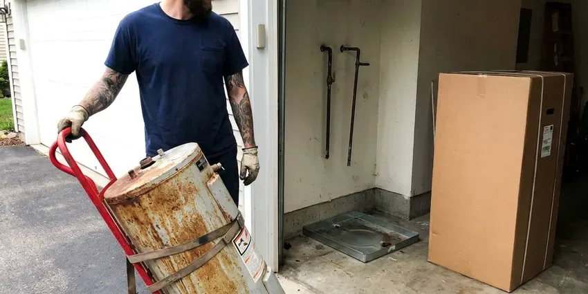
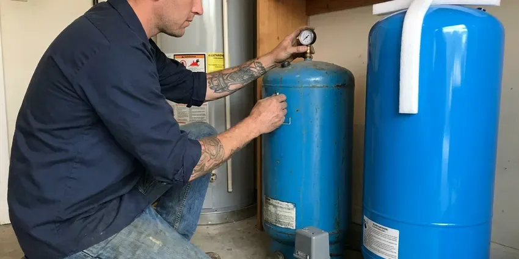

Tankless Water Heater Replacement in Meriden, CT
For efficient tankless water heater replacement in Meriden, CT, trust GLV Plumbing. We make sure your home has consistent hot water.
- Isolation Valves Installed on Every Job
- Fast Tankless Replacement
- Licensed Gas Line Technicians
- Transparent Pricing

Get Your New Tankless Water Heater Installed in Meriden, CT.
Contact us today for a free estimate and discover the benefits of on-demand hot water.
Reliable Tankless Water Heater Replacement for Meriden, CT Homes
When it comes to tankless water heater replacement in Meriden, CT, GLV Plumbing is the trusted choice. We understand the demands that homes in Connecticut place on water heaters, from mineral content to varying usage. We make sure your new tankless unit is correctly sized and carefully installed for strong performance and longevity.
Our expertise includes:
- Safe gas and electric line connections for new units.
- Precise sizing and installation of new tankless units.
- Accurate sizing and model selection for your home.

Additional Plumbing Replacement Services in Meriden, CT
When repairs are no longer enough, our replacement services in Meriden, CT deliver durable upgrades that restore full performance.


Water Heater Replacement in Meriden


Customers
Why Choose GLV Plumbing for Tankless Water Heater Replacement in Meriden, CT?
A large share of homes in Connecticut use private wells, which can be acidic or carry iron, manganese, or radon that require treatment. Hard water is tough on tankless heat exchangers, and many early failures trace back to scale and skipped flushing. We size, install and set up each replacement so it stands up to your local water supply.
- Increased Lifespan, Modern tankless water heaters often last twice as long as conventional tank models, offering a better long-term investment.
- Energy Savings, Tankless water heaters only heat water when you need it, which can noticeably reduce energy use compared to traditional tank models, a big plus for Connecticut utility bills.
- Longer Lifespan, Tankless water heaters usually last longer than conventional tank units, often up to 20 years with proper maintenance, giving you better long-term value.
Citywide Coverage
From downtown lofts to suburban homes, our technicians are familiar with the plumbing layouts found throughout Meriden. We make sure every installation meets local codes and your expectations.
Experienced Team
Each technician at GLV Plumbing knows tankless technology, so your replacement is done accurately and efficiently. We focus on details like proper gas line sizing, venting and electrical connections for top performance and safety.
Safety-First Approach
Safety is our top priority for every tankless water heater replacement. We closely follow all local Connecticut plumbing and gas codes, so your new unit is installed securely and operates without risk.
Trusted Certified Meriden Plumbing Services Professionals
At GLV Plumbing, we take pride in providing certified plumbing services throughout Meriden, CT. Backed by leading industry credentials, our experienced plumbers combine technical skill with genuine customer care. Whether it is repair, installation, or maintenance, we follow strict safety and quality standards to deliver lasting results you can trust.
Call Us Now PHCC Plumbing Contractor Recognition
PHCC Plumbing Contractor Recognition Better Business Bureau (BBB) Accreditation
Better Business Bureau (BBB) Accreditation Angi Certified Pro
Angi Certified Pro ISO 9001 Quality Management Certification
ISO 9001 Quality Management CertificationReliable Tankless Water Heater Replacement Services in Meriden, CT
Rinnai Tankless Water Heater Replacement in Meriden
Rinnai is a leading brand in the tankless water heater market, known for its quality and engineering. If your Rinnai unit is aging or acting up, GLV Plumbing provides expert Rinnai tankless water heater replacement in Meriden. We make sure your new Rinnai unit is installed correctly, maximizing its efficiency and lifespan. Our technicians know the installation requirements and venting options for Rinnai models, so the upgrade goes smoothly.

Commercial Tankless Water Heater Replacement in Meriden, CT
Businesses in Meriden, CT often need robust hot water solutions, and tankless systems can provide the efficiency and capacity needed. We regularly replace commercial tankless units for restaurants, offices and other facilities with minimal disruption to your operations. Our plumbers are experienced with high-capacity models and complex plumbing layouts. We deliver a reliable hot water supply that meets your business's demands and health code requirements.
Navien Tankless Water Heater Replacement in Meriden, CT
Navien tankless water heaters are popular for their condensing technology, offering high efficiency and performance. When it is time for a Navien tankless water heater replacement in Meriden, CT, you can count on GLV Plumbing. We have extensive experience with Navien's advanced systems, including their combination boiler and water heater units. Our installation process focuses on dialing in your new Navien's performance, so you benefit from its energy-saving features and reliable hot water output.
Commercial Tankless Replacement in Meriden
Restaurants, salons and small offices often use multiple tankless units linked together on a rack system. When one or more units fail, we replace them and rebalance the cascade controls so they split the load. We check gas pressure under full demand, since commercial racks can draw more than 600,000 BTU combined. Scheduling is easy to work around, so we can work after hours and keep your business open. We also set up a descaling schedule matched to your water usage.
Tankless vs. Tank Water Heater Replacement Cost in Meriden, CT
When considering tankless water heater replacement in Meriden, CT, it is natural to compare costs. While the initial installation of a tankless unit can be higher than a traditional tank, the long-term energy savings and longer lifespan often make it the more economical choice. We provide honest, upfront pricing for both options. That helps you make an informed decision based on your budget and hot water needs, with no surprises.
Condensing Tankless Replacement in Meriden
Condensing tankless units like the Navien NPE series or Rinnai Sensei reach efficiencies above 90 percent by recovering heat from exhaust gases. They vent through low-cost PVC and produce acidic condensate that must be neutralized and drained properly. We install a neutralizer cartridge and route the condensate line to an approved drain. Humid summers bring condensation on cold pipes and musty basements, which can rust fittings and encourage mold near plumbing. Condensing units still save gas because they work year-round on showers, laundry and dishes. We explain the cost difference so you can decide if the efficiency gain is worth it.
Like-for-Like Tankless Swaps in Meriden
When your existing tankless has a cracked heat exchanger or a failed control board that is not worth repairing, a direct replacement is often the quickest fix. We match the new unit to your current gas line, venting type and mounting location whenever possible. Many Rinnai and Navien models share similar footprints, which keeps wall patching to a minimum. We also replace the old service valves if they are corroded or stuck. Most like-for-like swaps are finished in four to six hours.

Gas Tankless Water Heater Replacement in Meriden
Many homes in Meriden rely on natural gas for water heating, and gas tankless units are a highly efficient option. Our gas tankless water heater replacement service includes thorough inspection of your existing gas lines, proper sizing of new gas lines if needed, and secure venting to the outdoors. We prioritize safety. All gas connections and combustion air requirements meet Connecticut and local codes, heading off potential hazards and maximizing efficiency.
Tankless Water Heater Replacement Near Me in Meriden, CT
Local service matters because tankless problems often show up during the busiest part of your day. Our techs are close by and can figure out whether a repair or replacement makes more sense. We back every replacement with clear labor coverage and register your manufacturer warranty for you.
Looking for tankless water heater replacement near me in Meriden, CT? GLV Plumbing is your local pro, providing fast and professional service across the whole area. Our team is located to respond quickly to your hot water needs, with fast service right to your doorstep.
GLV Plumbing at a Glance
- Licensed and insured plumbers serving Meriden, CT
- Same-day appointments and 24/7 emergency response
- Upfront, flat-rate pricing before work begins
- 4.8-star rated by 946+ Connecticut customers
Meriden Map
Meriden Information
- Population
- 60,111
- Area codes
- 203/860/475
- Service area
- Meriden and communities within 40 miles
- Nearby
- Middletown, New Britain, Bristol, Waterbury
Replacing your tankless water heater in Meriden, CT is a sound investment, especially with seasonal temperature swings and the demand for efficient hot water in modern homes.
Expert Services
Trust our professionals for reliable GLV Plumbing solutions in Meriden, CT.
Our Specialized Plumbing Services in Meriden, CT
At GLV Plumbing, we provide a complete range of plumbing services across Meriden, CT. From leak detection to full system installations, our team ensures fast, precise, and affordable service for both residential and commercial properties. Explore our core services below:


How Our Tankless Water Heater Replacement Process Works in Meriden, CT
Our tankless water heater replacement process is designed to be straightforward and stress-free for homeowners in Meriden, CT.
Request a Quote
Call (860) 487-7330 with your current model number and a photo of the install. We give you a ballpark price and schedule a visit.
Size and Inspect
Our tech measures gas line size, meter capacity, venting path and water hardness. We recommend a unit that matches your hot water demand.
Install and Test
We remove the old heater, install the new one with service valves and venting, then test gas pressure and combustion. You get a walkthrough on settings and flushing.
Frequently Asked Questions About Tankless Water Heater Replacement in Meriden
The cost for tankless water heater replacement in Meriden, CT usually ranges from $3,000 to $6,000, depending on the unit's brand, capacity, fuel type (gas or electric) and any needed changes to gas lines, electrical or venting. This estimate includes both the new unit and professional installation. We will provide a detailed quote upfront after assessing your needs.
A direct swap typically takes four to six hours. A tank to tankless conversion with new gas and venting usually takes a full day.
We do not recommend it. Gas line sizing, venting clearances and combustion testing require training, and improper installs can void the warranty or create carbon monoxide hazards.
Yes, in most areas of Meriden and Connecticut, a permit is required for tankless water heater replacement, especially if it involves gas line changes or significant electrical work. Our team at GLV Plumbing will handle all required permitting so your installation is fully compliant with local building codes and safety regulations.
Yes, tankless water heaters are generally more energy-efficient than traditional tank models. They only heat water on demand, eliminating the standby heat loss that comes with keeping a large tank of water hot. This can lead to real savings on your utility bills over time, particularly in homes with varying hot water usage.
A standard tankless water heater replacement typically takes between 4 and 8 hours. This timeframe can vary based on whether we are replacing an existing tankless unit with a similar model or upgrading from a traditional tank water heater. A tank conversion may require more extensive changes to gas lines, electrical or venting.
With proper installation and regular maintenance, a new tankless water heater usually lasts 20 to 25 years. This is significantly longer than traditional tank water heaters, which usually last 10 to 15 years. Regular flushing and descaling can help extend the life of your tankless unit, especially in hard water areas.
Well-maintained tankless units can last 15 to 20 years. In hard water areas without regular descaling, heat exchangers can fail much sooner. Annual flushing makes the biggest difference.
What People Are Saying About Our Plumbing Experts?

James P.
Our commercial plumbing system had a leak under the sink, and GLV Plumbing handled it professionally. The plumbers arrived quickly and restored everything without disruption to our customers.
Commercial Plumbing · New Britain, CT
Mark T.
When our office needed drain cleaning, GLV Plumbing provided quick, reliable service. The plumber arrived on time and made sure every drain flowed perfectly before leaving. Very satisfied.
Drain Cleaning · New Britain, CT
Sofia M.
Two new toilets installed in one visit, no mess left behind, and the tech even adjusted a faucet he noticed was dripping. Fair pricing and really friendly.
Toilet Installation · Bristol, CT
Emily R.
I called GLV Plumbing for plumbing repair, and the technician was fast, polite, and thorough. They explained the problem clearly and fixed it the same day. I will definitely hire them again. Highly recommended!
Plumbing Repair · West Hartford, CT
Patricia H.
We had a slab leak that two other companies could not find. GLV Plumbing located it in under an hour, explained our options, and the price matched the quote to the dollar.
Slab Leak Repair · Waterbury, CTLaura S.
I scheduled a water heater replacement, and the team made the process smooth and affordable. The new unit works perfectly, and they cleaned up after completing the job.
Water Heater Replacement · Hartford, CT